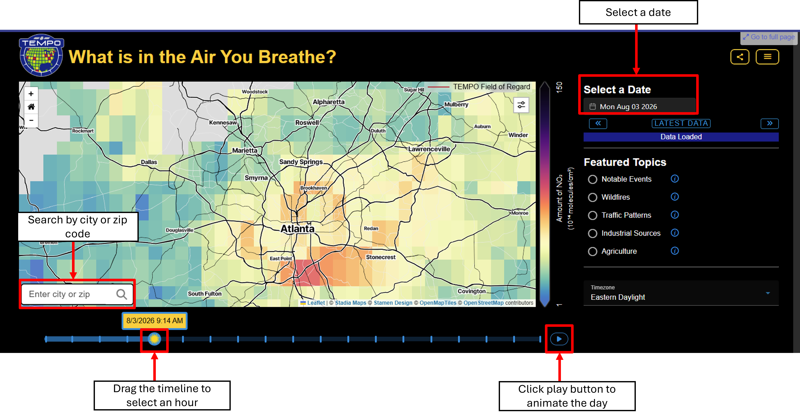

Explore summertime satellite NO2 patterns under contrasting winds and nearby NEI 2020 point-source emissions.
What is TEMPO?
NASA's TEMPO instrument observes air-pollution gases across North
America every daylight hour from geostationary orbit. Its frequent
measurements reveal how pollution changes during the day.
NASA TEMPO mission
Where does NO2 come from?
Nitrogen dioxide is produced mainly when fuel burns in vehicles,
power plants, aircraft, rail equipment, and industry. Spatial
patterns and plumes can indicate which sources may be influencing an
area, while winds can move those plumes away from their sources.
NASA NO2 explanation
How is NO2 related to other pollutants? NO2 belongs to the NOx family (NO + NO2). In sunlight, NOx reacts with volatile organic compounds and contributes to ground-level ozone formation. Learn about surface ozone from NASA. The emissions overlays show NOx and hazardous air pollutants (HAPs) reported in the 2020 National Emissions Inventory.
Wind groups: Eastward transport occurred on 95 days (54%); westward transport occurred on 65 days (37%). The remaining valid days were not assigned to either transport group.
Use the official TEMPO public viewer to explore recent hourly NO2 observations for your location.
Website: https://tempo.si.edu/data_for_public.html

TEMPO observes during daylight hours. Satellite NO2 columns describe the amount of NO2 through the atmosphere; they are not direct measurements of personal exposure at ground level.